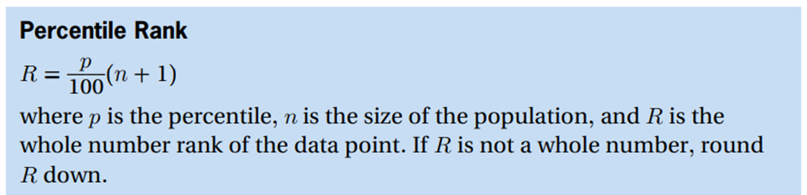
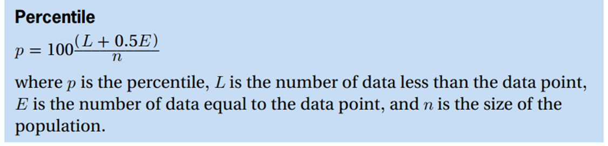
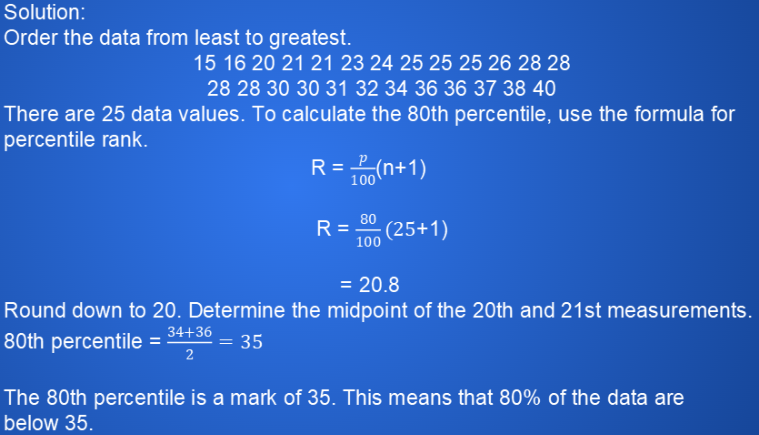
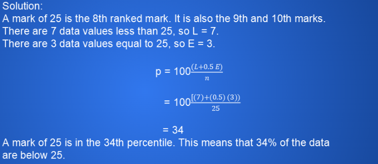
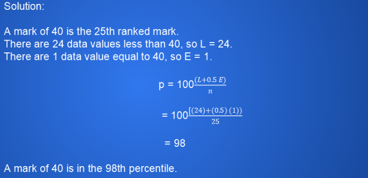
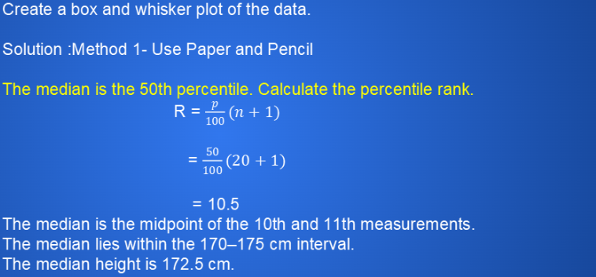
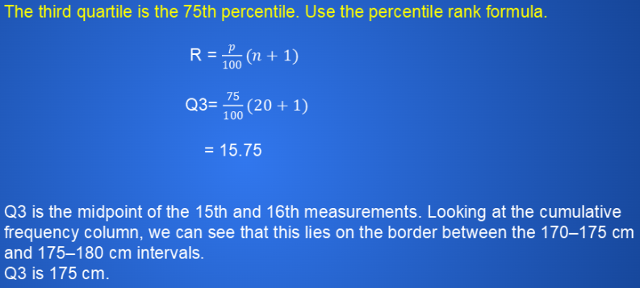

Measures of Spread
Percentile
The percent of all the data that are less than or equal to a specific data value
To help analyze the spread of data, you may need to identify the percentile rank or calculate percentiles.


Example
|
The list shows the marks for 25 students on a recent test out of 40. 31 28 28 30 20 25 38 40 26 28 15 21 28 a) Calculate the 80th percentile. b) What percentile is a mark of 25? c) What percentile is a mark of 40? a)  b)  c) |
Select each tab to learn more.
three points that divide the data set into four equal groups
• the first quartile (Q1 ) is the middle number between the smallest number and the median; it is also the 25th percentile
• the second quartile (Q2 ) is the median of the data set; it is also the 50th percentile
• the third quartile (Q3) is the middle number between the median and the largest number in a data set; it is also the 75th percentile
the difference between the highest value and the lowest value of a data set
• range = highest value – lowest value
the difference between the first and third quartiles
• IQR = Q3 – Q1
Example
|
Interquartile Range and Box and Whisker Plots The table lists the heights of the 20 girls who signed up to try out for their school basketball team. Determine the median, range, first and third quartiles, and interquartile range.    |